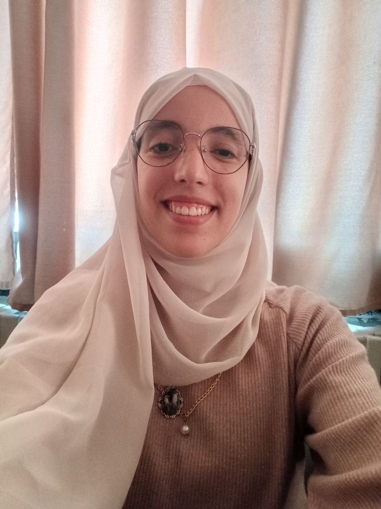

Touimer
page personnel de TOUIMER Zineb Insaf Hadil
Informations de contact
- Touimer Insaf Zineb Hadil
- BOUIRA
- zitouimer_etd@esgen.edu.dz
- 0551450135
Actuellement étudiante en deuxième année master de spécialité digital finance and banking managment à l’école ESGEN à Kolea, je suis à la recherche d’un stage d'un mois dans le cadre de ma formation.

- Formation
- Competences
- Centres d'intérêt
- Plus d'informations
- 14/11/2024 : Formation d'EXCEL, JOKER CLUB, Ecole ESGEN
- 13/08/2024 : Formation DATA VISUALIZATION, DOTCOM CLUB, ESC
- 30/03/2024 : Formation MARKETING DIGITAL, DOTCOM CLUB, ESC
- 17-31/03/2024 : Stage découverte au sein d'algérie telecom à bouira
- 23/03/2024 : Formation LA CREATION DES STARTUP, DOTCOM CLUB, ESC
- 16/03/2024 : Formation L'INTELLIGENCE EMOTIONNELLE ET LA COMMUNICATION, DOTCOM CLUB, ESC
- 24/02/2024 : Formation DESIGN THINKING, DOTCOM CLUB, ESC
- 02/02/2024 : Formation BUSINESS INTELLIGENCE, DOTCOM, ESC
- 16/02/2024 : MASTERCLASS AU RESEAU DES AGENCES BANCAIRES, ABC Bank
- 2023-2024 : joindre un CLUB scientifique, DOTCOM, ESC
- 2023-2024 : création d'un CHESS CLUB, cité universitaire Yamina Salah
- 14/12/2023 : Formation TIME MANAGEMENT, JOKER CLUB, Ecole ESGEN
- 13/12/2023 : Formation PC-COMPTA, JOKER CLUB, Ecole ESGEN
- 2021-2022 : Baccalauréat scientifique mention bien, condidat libre au bouira
- 2020-2021 : Baccalauréat scientifique mention bien, condidat libre au alger
- 2019-2020 : Baccalauréat scientifique mention bien, lycée Mohamed Seddik
Langues
- Anglais : avancé
- Français : intermédiaire
- Arabe : langue maternelle
centres d'interet
- Sports : volleyball, natation, handball, biking
- Lecture, écriture
- Développement personnel
- Apprentissage des langues
- jeux d'échecs
competences
- Compétences informatique : Excel, Word, Access(BDD), Canva, PC-COMPTA, MS-project
- Développement web : HTML
- Compétences en communication et travail d'équipe
- Organisation de RH
- Time management & meeting deadlines
Pour plus d’information, cliquez ici